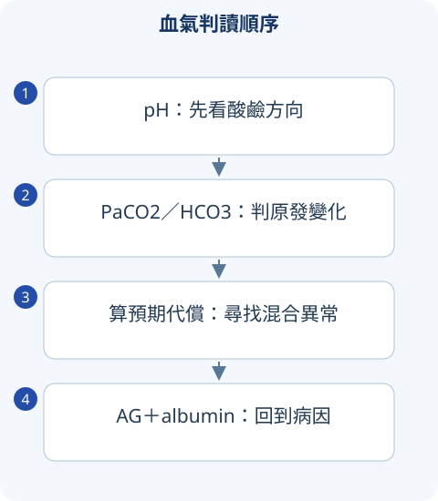

判讀圖解

詳讀 01血氣先讀原發異常，再驗證代償
pH <7.35 為 acidemia，>7.45 為 alkalemia；acidosis／alkalosis 指造成方向的過程，兩個過程可同時存在而 pH 正常。PaCO2 是呼吸成分，HCO3 是代謝成分；先看哪個變化可以解釋 pH，再算另一項是否為合理代償。
- pH 低、HCO3 低：先考 metabolic acidosis；PaCO2 高則考 respiratory acidosis。若兩者同時使 pH 更酸，為混合。
- pH 高、HCO3 高：先考 metabolic alkalosis；PaCO2 低考 respiratory alkalosis。正常 pH 不能省略代償計算。
- 檢驗彼此不合時核對 arterial／venous、採檢時機、化學面板 total CO2、呼吸器與治療時間。
詳讀 02代償公式：每條都有用途
| 原發異常 | 常用預期變化 | 超出範圍如何解讀 |
|---|---|---|
| Metabolic acidosis | Winter：PaCO2＝1.5×HCO3＋8 ±2 | 實際更高：合併呼吸酸；更低：合併呼吸鹼 |
| Metabolic alkalosis | PaCO2 約40＋0.7×(HCO3−24)，容許誤差依採用公式 | 不能把任何高 CO2 都當正常代償 |
| Acute respiratory acidosis | PaCO2 每升10，HCO3 約升1 | 慢性腎代償需時間 |
| Chronic respiratory acidosis | 每升10，HCO3 約升3.5–4 | 若變化不符，找混合代謝異常 |
| Acute respiratory alkalosis | PaCO2 每降10，HCO3 約降2 | 同樣分急慢性 |
| Chronic respiratory alkalosis | 每降10，HCO3 約降4–5 | 不直接套 acute 公式 |
寬表格可左右捲動
這些是近似的生理判讀工具，不是治療目標。單純代償通常不把 pH 完全過度拉到相反端，若看似「過度代償」應懷疑第二個原發異常。
詳讀 03Anion gap 與混合代謝異常
AG＝Na−Cl−HCO3，不含 K 時常用正常約 8–12，但依實驗室不同。Albumin 是重要未測陰離子，低白蛋白會掩蓋 AG 升高；常用 corrected AG＝AG＋2.5×(4−albumin[g/dL])。
高 AG 酸中毒考 lactate、ketoacids、uremia、毒醇與 salicylate；正常 AG 考腹瀉丟 bicarbonate、RTA 與高氯液。AG 不能直接分「腎因」或「非腎因」。
ΔAG＝corrected AG−normal AG，ΔHCO3＝24−HCO3；比較兩者可找正常 AG 酸中毒或代謝性鹼中毒。比值受基準、時點與治療影響，只作整合線索。嘔吐合併 DKA 可使 HCO3／pH 不像典型單純 DKA。
詳讀 04正常 AG 酸中毒：腹瀉與 RTA
| 型別 | 機轉／K | 尿液線索與關聯 |
|---|---|---|
| Type 1 distal RTA | 遠端排酸障礙，常低 K | 在全身酸中毒時尿 pH 常 >5.5；腎石／nephrocalcinosis，Sjögren 等 |
| Type 2 proximal RTA | 近端 bicarbonate 再吸收障礙，常低 K | HCO3 耗低後仍可酸化尿；Fanconi 伴 glucosuria／phosphaturia |
| Type 4 RTA | 低 aldosterone／抵抗，常高 K | 糖尿病、藥物等；尿 pH 不一定高 |
| 腹瀉 | 腸道流失 bicarbonate，常低 K | 腎排 NH4 通常適當增加 |
寬表格可左右捲動
Urine AG＝urine Na＋K−Cl 是 NH4 排出的間接估計：在適合情境負值支援有效 NH4Cl 排出，如腹瀉；正值支援排酸障礙。酮陰離子、低尿鈉與其他情境會干擾，不能當直接 NH4 量。
詳讀 05代謝性鹼中毒與毒物考點
嘔吐／胃抽吸丟 HCl，diuretic 增加遠端 Na delivery 與 K／H 流失；維持因素含 chloride depletion、低 K、低有效迴圈血量。尿 chloride 低常支援 chloride-responsive，但正在用利尿劑可升高；高血壓合併鹼中毒與低鉀考 mineralocorticoid 作用。
Salicylate 常造成 respiratory alkalosis 加高 AG acidosis；正常 pH 不表示輕症。Toxic alcohol 的 osmolal gap 隨時間可下降而 AG 上升，單一正常值不能排除；methanol 視覺、ethylene glycol 腎與草酸鈣是經典關聯。
HCO3 12、PaCO2 35、pH 酸，只有代謝酸中毒嗎？
Winter 預期 PaCO2＝26±2，實際35過高，表示另有呼吸性酸中毒。考題常要你辨識通氣不足而非只命名第一個異常。
比較表速覽
讀完上方詳解後，用以下表格複習診斷差異與治療重點。
速覽｜1｜血氣四步：pH、原發、代償、AG
正常 pH 可能藏有混合異常。代償不應把 pH 反向過度校正。
| 步驟 | 問題 |
|---|---|
| pH | acidemia／alkalemia？ |
| 原發變化 | PaCO2 與 HCO3− 哪個能解釋主要方向？ |
| 預期代償 | 是否在適當範圍；超出要找第二種原發異常。 |
| AG 與 delta | 即使 pH 正常仍檢查 AG；低 albumin 要考慮校正。 |
寬表格可左右捲動
書中部分代償式是近似法；應固定使用同一套常用公式並整合臨牀。
速覽｜2｜常用公式與代謝性酸中毒
AG 正常範圍依實驗室與是否納 K；以下 AG 未納 K。
| 項目 | 公式／概念 |
|---|---|
| AG | Na−（Cl＋HCO3−）。 |
| Albumin-corrected AG | AG＋2.5×（4−albumin[g/dL]）為常用近似。 |
| Winter formula | 預期 PaCO2 ≈1.5×HCO3−＋8±2 mmHg。 |
| High AG | lactate、ketones、uremia、toxic ingestions 等。 |
| Normal AG | GI bicarbonate loss、RTA、chloride load 等。 |
| Osmolal gap | 測量值−估算值；不能以正常 gap 單獨排除毒性酒精。 |
寬表格可左右捲動
PaCO2 高於預期提示合併呼吸性酸中毒，低於預期提示合併呼吸性鹼中毒。
速覽｜3｜RTA 與代謝性鹼中毒
先看 K、血壓、尿液與背景。
| 型態 | 機轉／線索 | 常見關聯 |
|---|---|---|
| Distal type 1 RTA | 排酸障礙、常低 K、結石／nephrocalcinosis | Sjögren 等。 |
| Proximal type 2 RTA | HCO3− 回收障礙、常低 K，urine pH 隨狀態變 | Fanconi；可合併葡萄糖／磷等流失。 |
| Type 4 RTA | 低 aldosterone／反應差、常高 K | DM、藥物、腎病等。 |
| Metabolic alkalosis、低 urine Cl | 嘔吐、先前利尿、volume／Cl depletion | 補充與病因導向，需看容量狀態。 |
| Metabolic alkalosis、高 urine Cl | 持續利尿、mineralocorticoid excess、Bartter／Gitelman | 依血壓、K、Mg 與尿鈣分辨。 |
寬表格可左右捲動
UAG 與 urine pH 各有侷限，不能視為所有酸中毒都適用的絕對診斷試驗。
情境練習
HCO3− 12、PaCO2 40 mmHg，適當代償嗎？
來源與版本
書籍學習來源：《國考分科詳解—醫學（三）》2020 年版，第 3 冊〈腎內・感染〉；本頁對應章節導讀位置為 PDF 第 17–32 頁（含封面，與書內印刷頁碼不同）。
依章節重寫比較與判讀重點；指引補充另列版本。圖解與情境練習為本站原創。核對日：2026/09/30。
詳細補充的來源範圍
上方「詳讀」為依原參考書主題架構重寫的基礎、臨床判讀與國考複習說明；原表格保留於速覽區。數值適用條件及舊題版本差異寫於對應小節；本頁未逐題收錄所有歷屆試題。
本輪擴充：2026/10/05。指引連結支援各自的更新主題；基礎病生理、藥物機轉與鑑別依書籍架構整理。